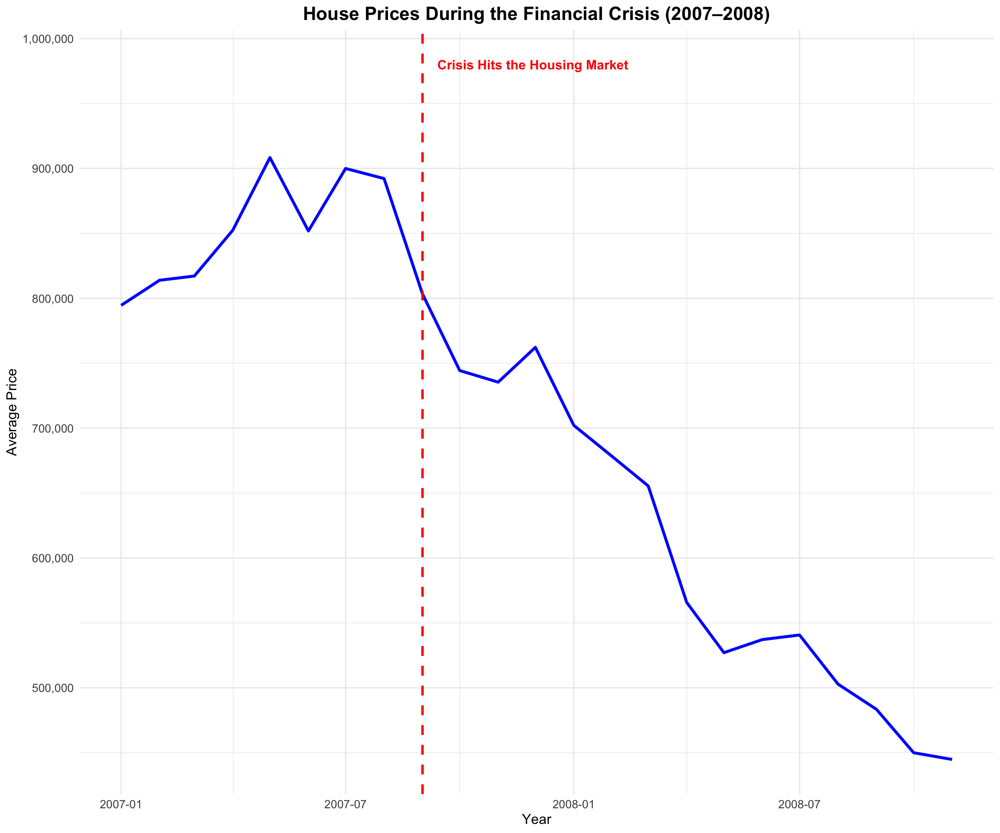

Question 4
When the Roof Caved In: Lessons from the 2007–2008 Housing Crisis
Governments are tearing down public housing, placing blind faith in the idea that the market will “fix everything.” But what happens when the market itself collapses? The 2007–2008 financial crisis showed us exactly that. Housing prices plummeted, communities suffered, and the very market forces they trusted became the root of the disaster. If we keep relying on market-driven solutions without safeguarding affordable housing, are we just setting ourselves up for another catastrophe? Here’s a classic example of what happens when policies fail to prioritize people over profits.